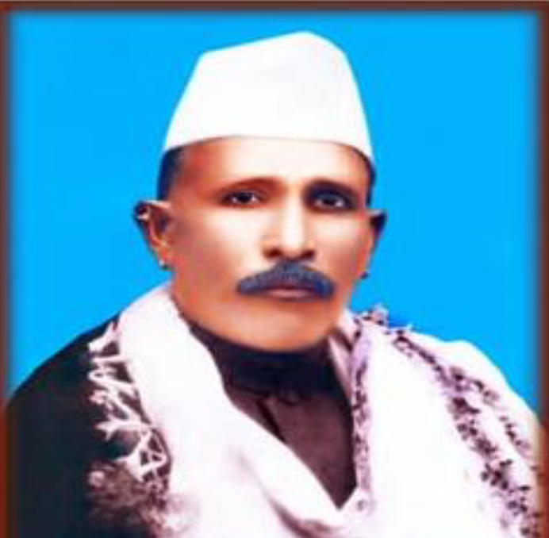

Shri Chennappa Sahukar
Founder and Leader of the Society
The society was established in the year 1920 during the rule of the Madras Province, under the leadership of Shri Chennappa Sahukar in the village of Kaipunjal.
Initially operating with limited infrastructure, the society primarily engaged in the supply and distribution of fishing nets, threads, and other fishing equipment to local fishermen until 1999. Due to its narrow scope of operations, the growth of the society remained limited during that period.
However, in the early 2000s, under the leadership of Shri Janardhan Salyan as President, and with the support of a capable administrative committee comprising Shri Sudharma Shriyan, Giriraj R., Chandrashekar Kundar, Yogish Kanchan, Pushpa Shriyan, and Pushpalatha R. Kotian, the society was given a new direction.
With the selfless service and efficient management of the Chief Executive Officer, Shri Jagadish Thingalaya, the society began to achieve remarkable progress.
In the years that followed, the dedicated service of the administrative committee further elevated the society's status within the cooperative sector.